AI or Artificial Intelligence, is an intelligence which is demonstrated by machines as humans do. In this field, computers think somewhat like humans, choose the right decision as a human does, taking care of various parameters, and many more. In today’s world, AI is used to make self-driving cars, self-flying drones, medical diagnosis, writing a poem, playing chess, search engines like Google, Yahoo and Bing Search, Online Assistants like Siri, Google Assistant, Cortana, and Alexa, image recognition in photographs and videos, spam filtering, predicting flight delays, smart trading bots and chat bots, prediction of judicial decisions, target online advertisement and energy conservations. These are the wide range of applications where AI is used. An AI can also produce Deepfakes, which mean to create a video or photograph of a person or a thing and changing the way the person or the thing behaved in the original format into a desirable format of the user. So talking about Mathematics in AI, the very basic thing which is used in AI is called A Bellman’s Equation.
At first let’s take an example of an agent (computer) is playing a game.
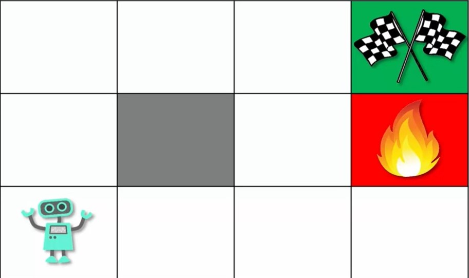Here the Green Box depicts the End of the Game, where the agent wins the game, whereas the red box which also show a fire emoji, depicts the End of the Game, where the agent loses the game.
In AI, the agent which is playing the game, doesn’t perform anything when we say it to do. This is because agents are behaving like humans. They won’t do something, till we give them some reward. Here in AI, the reward given to the agent is a hypothetical reward. The reward can be anything, you may set the reward to an alphabet, or a number, that doesn’t matter. The thing matters the most is that the agent looks for collecting more rewards.
Here I will set the reward for the Green Box to be +1 and the Red Box to be -1. These rewards are all hypothetical in nature, you neither have to buy or spend any money to buy a reward for the agent. Now when the agent comes to know that the reward is set. Then he calculates the best choice of reward which it needs. It will obviously choose to have a reward of +1, because it knows that -1 is less than +1.
Therefore, he start to roam randomly throughout the map, sometimes taking long walks, sometime constantly hitting itself on the game wall, or may have dived into the red box. When he goes to the red box the game is ended, and the user should restart. When the agent reaches the green box, the agent becomes happy to get the reward, now the agent thinks of getting the same reward, but he wanted to get the reward, within a short period of time. So at first he will think about the box due to which he landed in this green box. He will make a note of that box, because he came to know that whenever he reaches in that box, he will be just one step back from the reward. Now the question arises that, how will the agent come to know where he had se the second last step? Here the Mathematical part of AI comes to picture. There is a formula known as Bellman’s Equation. Using this equation, the agent comes to know about the second last step.
The Equation is as follows:
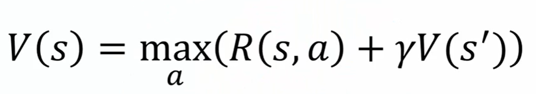This the Bellman’s Equation. This is the basic part of the Bellman’s Equation. We will modify the equation as we move forward here and add a level of difficulty.
Let’s get familiar with the equation, Here ‘V’ represents the Value, ‘s’ represents the current state or the current box in which the agent is now standing, ‘max a’ represents the maximum actions taken inside the game, ‘R’ represents the reward, ‘a’ represents the action which will be taken from the current state to a new state, gamma represents the discounting factor; details about this will be discussed later, “ s’ ” represents the next state of the agent.
Let’s get the box again.
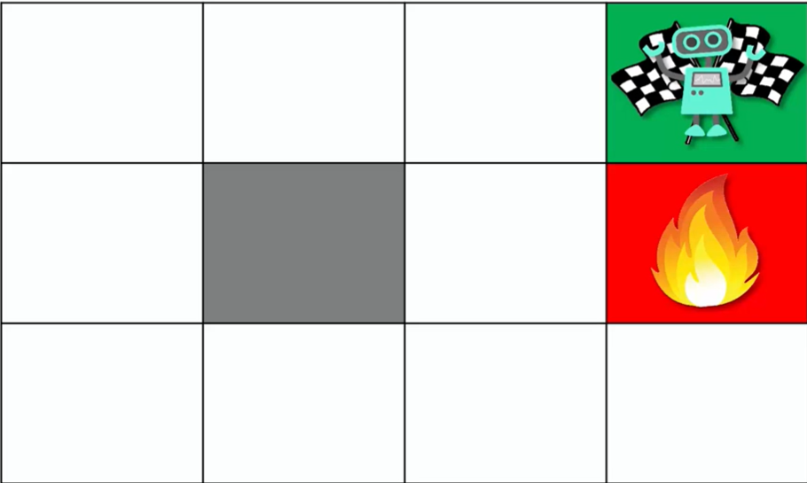Currently, the agent is inside the green box, which means that the game is finished and the agent won the game and he received a reward of +1. Now, if we order the agent to play the game, he would try to complete the game as quick as it can. So to do this, he should know the box before the green box. This is because he will come to know that whenever he will stand on that box, he will feel confident that if he moves on step forward, he will win the game and he will be awarded with a reward, which is +1 in this case. According to the equation:
The agent comes to know the value of the state of all the other boxes of the game by this equation. I haven’t discussed about the gamma sign or the discounting factor. This discounting factor is a factor which is set temporarily by the AI researcher, in order to have the equation work. Now the agent again roam throughout the board and reaches to the preceding box. Now the agent comes to know that if he step forward for once, he will win the game and will be rewarded +1. Now, if we again restart the game, now the agent wants to know the second box, or the box before the preceding box, because of which he reached into the preceding box. He uses the experience of the last game and uses the above given equation to find the value of the box before preceding box.
The value for the current state and action will be zero (s, a). This is because the agent is standing on a box which doesn’t has a reward. Therefore, the entire R(s, a) becomes zero. The gamma or the discounting factor value is set to 0.9 and the Value of the next box, the preceding box is 1, which is set by the agent. Therefore, gamma.V(s’) = 0.9x1 = 0.9. Therefore the Value of the second box is 0.9. The agent will come to know that if he lands on 0.9 valued box, the next box will be value of 1, which means he is very close to win the game. Now, the agent have to undergo lots and lots of restarts in order to map the values of all the boxes. At last the path of the map looks like this,
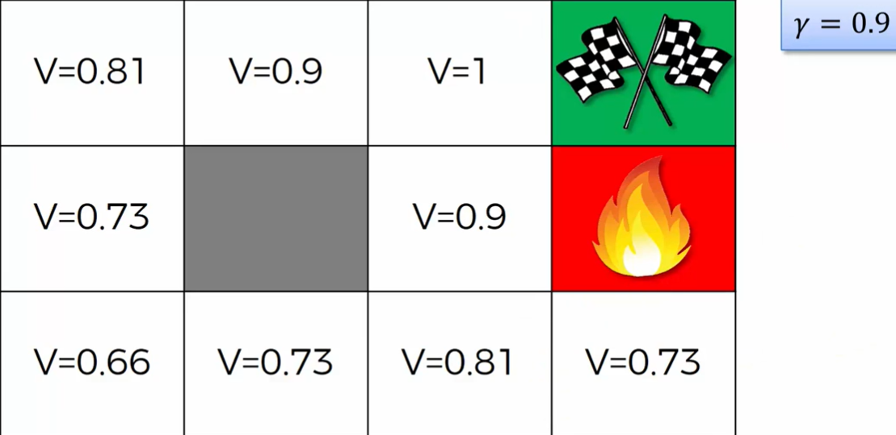The above practice of finding the values of the map is called Reinforcement Learning.
You might have seen robot dogs. They are trained to walk over certain obstacles and they can walk better than ordinary dogs! This is done by reinforcement learning. You can see the difference between a pre-programmed robot dogs verses an AI robot dogs. Both of them have been asked to do the same thing. The pre-programmed dog will do the actions, which they are told to do so, whereas the AI robot dogs, learn through their mistakes as a child does when he first learns to walk. Now if we compare the child at the age when he was learning to walk from the age of an adult, there is quite a lot of difference. This is because the child have learned from his mistakes and he had stored that mistakes in his mind, so that he won’t repeat it again. Same concept is used for reinforcement learning. This concept of reinforcement learning is only possible because of Mathematics and its formulas. But, the reality is that whatever you have understand till now, like the working and understanding of the agent. It might looks pretty simple and easy, but the catch is that, whatever we think to do, it doesn’t happen the greatest. The explanation of the phrase will be done in the next section of the topic and the bellman’s equation will be updated a little bit, with a pinch of difficulty.
Now, if the agent, let’s say is standing on the box which has a value of 0.66. Now the agent has two paths. According to us, both the paths have equal distance and the will take equal amount of time to reach the end point or the green box. But the reality is that, whatever we think of doing something, it doesn’t happen that way. So the next part of the topic is all about the types of actions which the agent takes during the game.
Let’s assume that the agent is standing in the box which has a value of 0.81(second box from the left, first row from the last). The agent has three ways to move itself, upwards, left and right. There is also a possibility of the agent to hit the wall of the board. Now the concept of Deterministic and Non-Deterministic search comes into picture, here the first term Deterministic means that whatever the agent thinks it wants to be done, the agent does the right thing within a short span of time, but the second term means that whatever the agent wants to be done, there is a little probability of the accuracy of the action to be taken place. The agent might go somewhere else. As in the above given situation of the agent standing in the box which is valued as V=0.81. Now the agent decides to move upwards. This is because the agent knows that the value of the box which is above has a greater value than the box which is on its left and right.
Let’s come out of that scene and jump into a new scene.
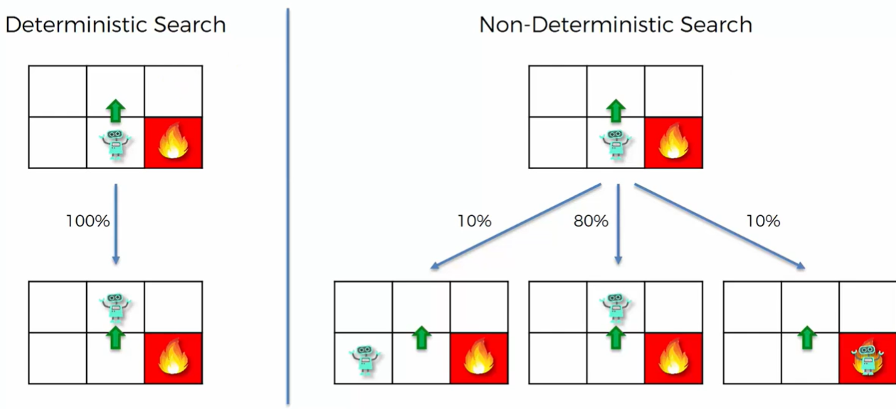This is an image of a non-deterministic search. Here the agent is on a box (currently without any values). The agent has decided to move forward, but according to the non-deterministic search concept, there is an 80% probability of the agent to move forward, 10% probability to move to its left and 10% probability to fall into the fire box and lose the game. This is how A.I works and process is called MDP (Markov’s Decision Process).
Now our Bellman’s Equation becomes more sophisticated.
Now there is a form of randomness inside the equation, so the value of V(s’) can’t be decided before, because we don’t know where will the agent move.
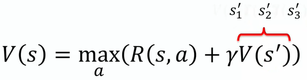Now the Value of the next state will be replaced by the three possible states.
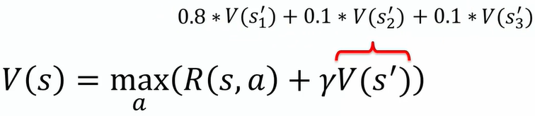Now the agent will multiply the expected probability with the respective values and the equation changes to this:
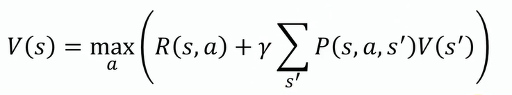The equation changes to the expected value of the next box.
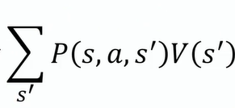This represents the sum of all possible values which are probable values, of the next box.
Due to this problem, the AI thinks different than any ordinary pre-programmed robot dog or even humans.
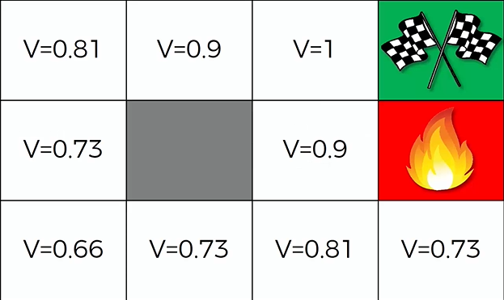This is the values of the board.
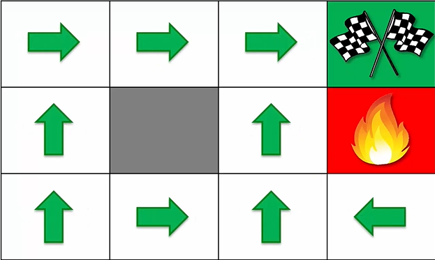Here the plan is showed. These are the two possible ways for the agent to complete the game and takeaway the reward. But here, the values got changed and none of the values inside the board game are equal. The reason behind this is the randomness and of course, I did it with the help of the discounting factor, which I changed. Now the agent has two routes to reach the green box, one through the far end of the box and the other between a wall and fire box. Now according to randomness, if the agent is standing between the wall and the fire (Example of a situation while taking a shorcut). Here the agent, obivously wants to go forward, but due to randomness, its path breaks to three infront of him, according to their coresponding probabilities. Lets say the moving forwards have a probability of 80% and the hitting the wall and jumping inside the fire box have a probability of 10% each. For this, a new concept called "Living Penalty" is made for the agent to think on this problem.
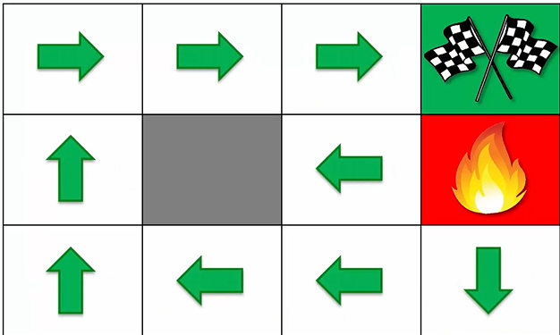This is a concept inside Reinforcement Learning, where the agent will be rewarded a negative reward, because of which the mentality of the agent changes and he tries to complete the board game quickly.
This is how Artificial Intelligent Systems are made and trained for their individual field of application.